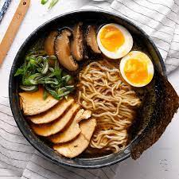

Ramen

Ramen is a noodle-based dished widely regarded as a Japanese
soul food. It is consumed in cold or warm weather.
The word ramen is a Japanese borrowing of the Mandarin
Chinese lāmiàn. The dish is an adaptation of of Chinese wheat
noodles.
Ingredients
- dry noodles
- broth
- seaweed
- egg
Steps to Prepare
- Boil pasta to preferred firmenss
- Slowly lower noodles into broth
- Lay seaweed on side of bowl adjecent to ramen
- Slice egg and place in bowl
- Serve